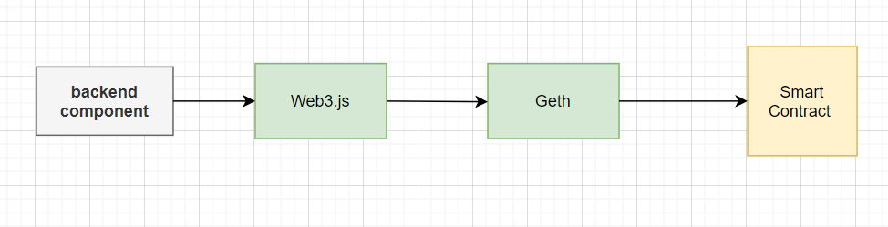
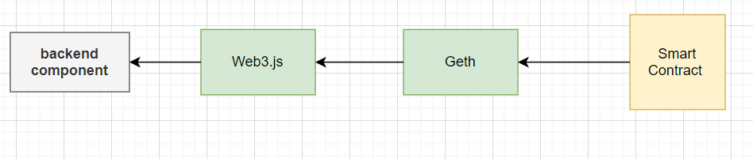

How sending transactions and receiving events work in backends in Ethereum blockchain
I am working on an ethereum project but I have some doubts. I have a backend that connects to the blockchain via web3.js. To connect to the blockchain I use a geth node. I understand that the sequence is this:
send transacrion  listen to events  my questions are:
- What is the component sending the transaction? Is it the backend component or the geth node?
- Then suppose that another smart contract in the network emits an event that I want to capture. What is the component that captures the event? Is it the backend component or the geth node?
Answer
A very good question, sir.
Usually, in setups like this backend signs the transaction with its wallet key. The backend has a hot wallet with ETH balance to be able to create and broadcast transactions.
The transaction is pushed to Ethereum API node over JSON-RPC. The node broadcasters the transaction to P2P network. A miner picks up the transaction from the mempool. A new block is created. The miner broadcasts the newly crated block back to the peer-to-peer network. Your Ethereum node picks up the new block. Web3.js backend application polls or subscribes events related to the smart contracts from your Ethereum node. Backend event web3.js handlers are fired for the state changes in the new block.
Note that the blocks can be also rolled back in the case of a minor blockchain reorganisation. In the case or reorganisation, the event handlers fire again (twice, thrice, etc.) for each competing block. Minor blockchain reorganisation may occur many times in an hour. The current state is probabilistic, so you always need to wait for a few blocks to be sure.
For events and transactions by other actors in the blockchain, you just subscribe to the events and process them as new blocks arrive from miners to your node.